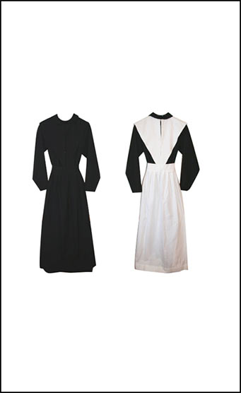

Utopia:
past
This is a prototype
of a time machine
click on the dates to travel
‘Never has been a
Richard Martin
utopian wish or
realisation without serious
consideration of clothes’
The long literary tradition of utopian genre in which the authors fantasize of better societies or utopias (from Greek u or ou, no, not; topos, place) found its realization in a political trend of utopianism or social dreaming. Various schools of utopianists, be it early socialists of the 19th century or the first adepts of cybernetic utopia of the 1950-s, dreamt differently and sometimes even oppositionally. However, every utopian dream shares certain common elements, including well articulated dress code represented by utopian dress that supports and reaffirms the values promoted by utopian ideologists.
1551

Before becoming real utopian dress existed on the pages of the early fictional utopias, such as Thomas More’s Utopia, inhabitants of which wore clothes that were uncoloured and all cut to the same pattern.
1800
01. Owenite’s women from New Harmony settlement, Indiana, US.
02. Black Quaker dress with black pointed cape and apron. Black Quaker dress with white linen cape and apron
03. Quaker fashion blogger Jane.
Victorian dress reform the main aim of which was to liberate people from uncomfortable, not hygienic clothes of old times were developing throughout the whole 19th century.
An interest in the dress reform started to emerge under the influence of a number of progressive communitarian settlements and religious communities in the US and UK, that spared their women from necessity to wear stiff corsets in favor of plain, simplified dresses, shorter skirts and even trousers.
1830-s
French socialists devised a gender neutral uniform to fight against status and gender stereotypes imposed by class-based society. The uniform was buttoned all the way to the back, so one could not get out of the costume without help from another person – this way socialists showed the interdependence of community members.